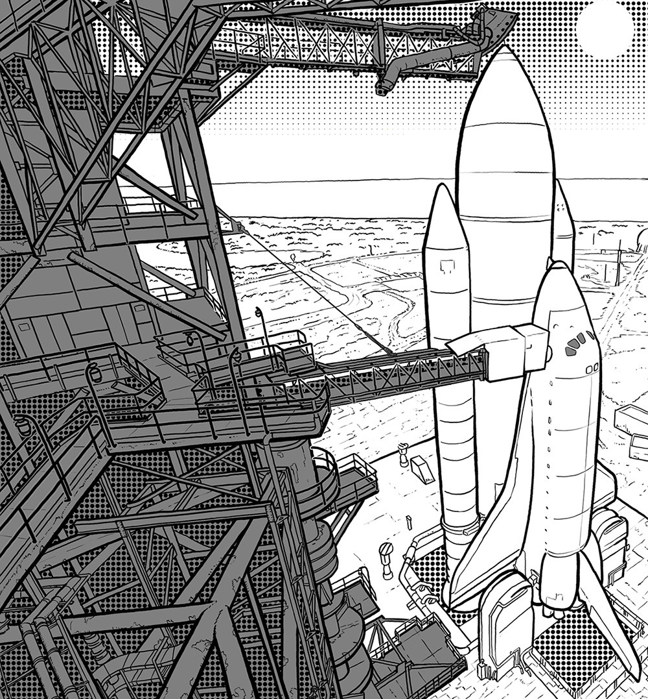

A spaceport or cosmodrome is a site for launching (or receiving) spacecraft, by analogy to seaport for ships or airport for aircraft. The word spaceport, and even more so cosmodrome, has traditionally been used for sites capable of launching spacecraft into orbit around Earth or on interplanetary trajectories. However, rocket launch sites for purely sub-orbital flights are sometimes called spaceports, as in recent years new and proposed sites for suborbital human flights have been frequently referred to or named 'spaceports'. Space stations and proposed future bases on the moon are sometimes called spaceports, in particular if intended as a base for further journeys. The term rocket launch site is used for any facility from which rockets are launched. It may contain one or more launch pads or suitable sites to mount a transportable launch pad. It is typically surrounded by a large safety area, often called a rocket range or missile range. The range includes the area over which launched rockets are expected to fly, and within which some components of the rockets may land. Tracking stations are sometimes located in the range to assess the progress of the launches. Major spaceports often include more than one launch complex, which can be rocket launch sites adapted for different types of launch vehicles. (These sites can be well-separated for safety reasons.) For launch vehicles with liquid propellant, suitable storage facilities and, in some cases, production facilities are necessary. On-site processing facilities for solid propellants are also common. A spaceport may also include runways for takeoff and landing of aircraft to support spaceport operations, or to enable support of HTHL or HTVL winged launch vehicles.
